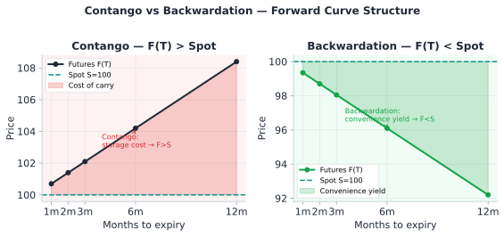
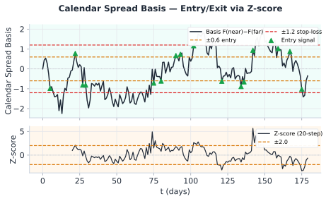

Calendar spread คือการ long futures ที่ expiry เร็ว (front month) และ short futures ที่ expiry ช้า (back month) ของ underlying เดียวกัน หรือกลับกัน โดยที่เราไม่ได้ bet ทิศทางของราคา underlying แต่ bet ว่า ความต่างระหว่างสอง expiry จะกลับสู่ fair value
CL June futures = $80.00 | CL September futures = $82.50
Calendar spread = Front − Back = $80.00 − $82.50 = −$2.50
Market คาดว่า oil ใน Sep จะแพงกว่า Jun $2.50 → ตลาดอยู่ใน Contango
Outright long CL: P&L ขึ้นตรงกับราคา oil — เสี่ยง directional risk เต็มๆ
Calendar Spread: P&L ขึ้นกับ ความต่าง ระหว่าง expiry — delta ต่อ oil เกือบ zero, เสี่ยงน้อยกว่ามาก
| ประเภท Position | Long Front / Short Back | Short Front / Long Back |
|---|---|---|
| ชื่อเรียก | Long Calendar Spread | Short Calendar Spread |
| กำไรเมื่อ | Contango ลดลง (spread แคบลง) | Contango เพิ่มขึ้น (spread กว้างขึ้น) |
| สถานการณ์ที่ดี | อุปสงค์ระยะสั้นพุ่งสูง, storage ตึงตัว | supply ระยะสั้นล้นตลาด |
| Risk หลัก | Contango ขยายมากกว่าที่คาด | Market พลิกเป็น Backwardation |
โครงสร้าง futures term structure บอกว่า market คาดการณ์ราคาในอนาคตอย่างไร:

ราคา futures ที่ "fair" ต้องสะท้อน cost of carry ครบถ้วน มิฉะนั้นจะมี cash-and-carry arbitrage:
เรานิยาม calendar spread = Back-month − Front-month เสมอ ภายใต้ contango (r+u−q > 0) ค่านี้จะ เป็นบวก สอดคล้องกับ key-idea ที่ว่า basis ≈ (storage − convenience) × ΔT/365 สูตรนี้คือสูตรเดียวกับที่ใช้ในตัวอย่าง §17.4 และแบบฝึกหัด §17.7
เมื่อ basis เบี่ยงจาก fair value เกิดโอกาส arbitrage:
| Parameter | Crude Oil (ตัวอย่าง) | Gold (ตัวอย่าง) | BTC Futures |
|---|---|---|---|
| r (risk-free) | 5.25% / ปี | 5.25% / ปี | 5.25% / ปี |
| u (storage) | 0.5–1.5% / ปี | 0.1–0.3% / ปี | ~0% (digital) |
| q (convenience) | 2–10% / ปี (volatile) | 0.5–1% / ปี | 0% (ไม่มี utility) |
| ลักษณะ | Contango หรือ Back ได้ทั้งคู่ | มักเป็น Contango เสมอ | ขึ้นกับ funding rate |
ข้อมูล ณ วันที่วิเคราะห์:
คำนวณ fair basis สำหรับ 60 วัน (T = 60/365 ≈ 0.164 ปี):
เมื่อ expiry ใกล้เข้ามา basis ของ futures จะต้อง converge สู่ 0 (เนื่องจาก F(T→0) = S)

Crypto perpetual futures ใช้ concept เดียวกับ calendar spread แต่มีความแตกต่างสำคัญ:
| ลักษณะ | Commodity Calendar Spread | Crypto Perpetual Basis |
|---|---|---|
| Expiry | มี expiry — convergence มีวันกำหนด | ไม่มี expiry — ไม่มี forced convergence |
| Mechanism ดึงกลับ | Cost of carry + expiry convergence | Funding rate (ทุก 8h หรือ 1h) |
| Basis = ? | F(T₂) − F(T₁) vs cost of carry | Perp − Spot vs funding rate integral |
| Risk | Delivery, roll cost, supply shock | Funding ขาด liquidity, exchange risk |
| Calendar spread ใน crypto | ทำได้กับ quarterly futures | Perp vs. quarterly = "basis trade" |
BTC Perp = $65,000 | BTC Sep Quarterly = $66,200
Observed basis = +$1,200 (quarterly แพงกว่า 1.85%)
Annualized funding rate implied = 1.85% × (365/90) ≈ 7.5% / ปี
ถ้า funding rate จริงต่ำกว่า 7.5% → Quarterly แพงเกินไป → Long Perp + Short Quarterly
Roll the calendar spread 5 trading days before near-month expiry to avoid delivery squeeze. Track the roll cost (bid-ask spread × 2 legs) against the basis signal — roll only if basis signal > 2× roll cost. Use continuous front-month contract for calibration but trade the actual dated futures pair for execution.
Cost of carry model assumes known interest rate r, storage cost u, convenience yield y — all of which are unobservable and time-varying in real markets. Calendar spread can persist in Contango for months (crude oil 2020) without reverting. Convergence at expiry is guaranteed only for cash-settled contracts; physical delivery contracts can diverge further near expiry (delivery squeeze).
Natural Gas (NG) futures: Front (August) = $2.80/MMBtu, Back (November) = $3.20/MMBtu
r = 5%, storage cost u = 8% ต่อปี, convenience yield q = 2% ต่อปี, T_back − T_front = 90 วัน
ถาม: Fair spread คือเท่าไร? Basis ปัจจุบัน (observed) เป็น Contango มากเกินไปหรือน้อยเกินไป?
Fair spread = F_front × e^{(r+u−q)×ΔT} − F_front
= F_front × (e^{(0.05+0.08−0.02)×(90/365)} − 1)
= $2.80 × (e^{0.11×0.2466} − 1)
= $2.80 × (e^{0.02712} − 1)
= $2.80 × 0.02749 = $0.077
Observed spread = $3.20 − $2.80 = $0.40
Fair spread ≈ $0.077
Observed ($0.40) >> Fair ($0.077) → Contango แพงเกินไปมาก
Trade: Long Front (Aug) + Short Back (Nov) รอ convergence
BTC Perpetual = $67,500 | BTC December Quarterly Futures = $68,900
เวลาถึง expiry Dec = 120 วัน | Risk-free rate = 5% ต่อปี
ถาม: Implied annualized basis คือเท่าไร? ถ้า funding rate เฉลี่ยที่คาด = 10% ต่อปี ควร trade อย่างไร?
Observed basis = ($68,900 − $67,500) / $67,500 = 2.07%
Annualized = 2.07% × (365/120) = 6.3% ต่อปี
ถ้า funding rate เฉลี่ยที่คาด = 10% ต่อปี:
คาดว่า perp จะต้องจ่าย funding 10% ต่อปี → คนถือ long perp จ่ายออก
Implied basis ที่ fair = 10% × (120/365) = 3.3%
Observed basis = 2.07% < Fair 3.3% → Quarterly ถูกเกินไป
Trade: Long Quarterly + Short Perpetual (รับ funding จาก short perp)
Ch.17 Commodity Basis | ต่อไป → Ch.18: Options Overlay — Put-Call Parity Arbitrage